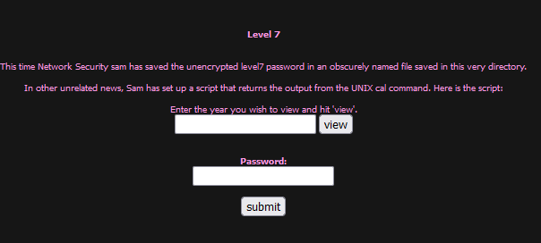
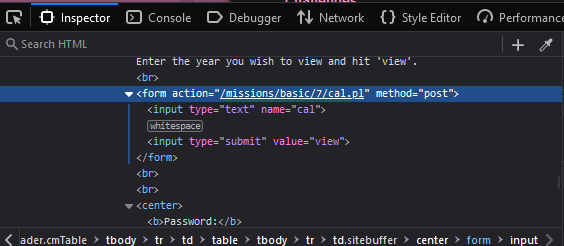
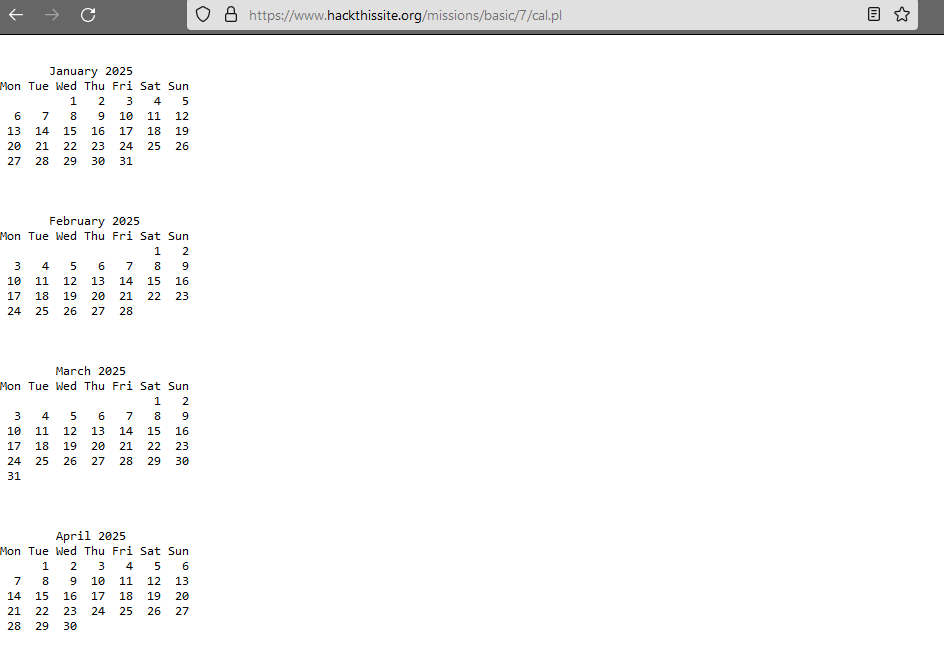
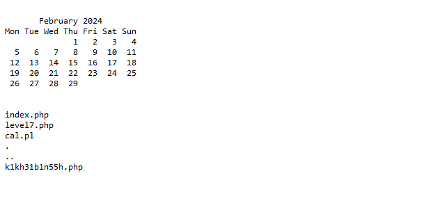
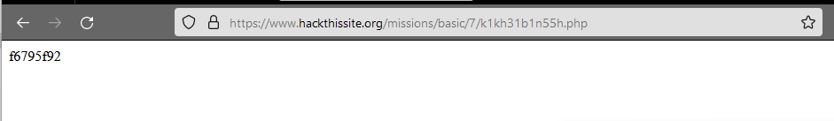

the calendar is stored in cal.pl

which if you check out, takes you to a calendar for the current month; OR you can enter any year to see the entire calendar

all this does is call the CAL command, which prints out an ASCII calendar. i tried entering multiple unix commands here, such as cat /etc/shadow, ls and whoami to no avail. THEN i ‘;’ before my commands and boom, they worked. nooblet moment. anyway, i ran ;ls

hmm, that gibberish php file sounds interesting. let's take a peak

solved